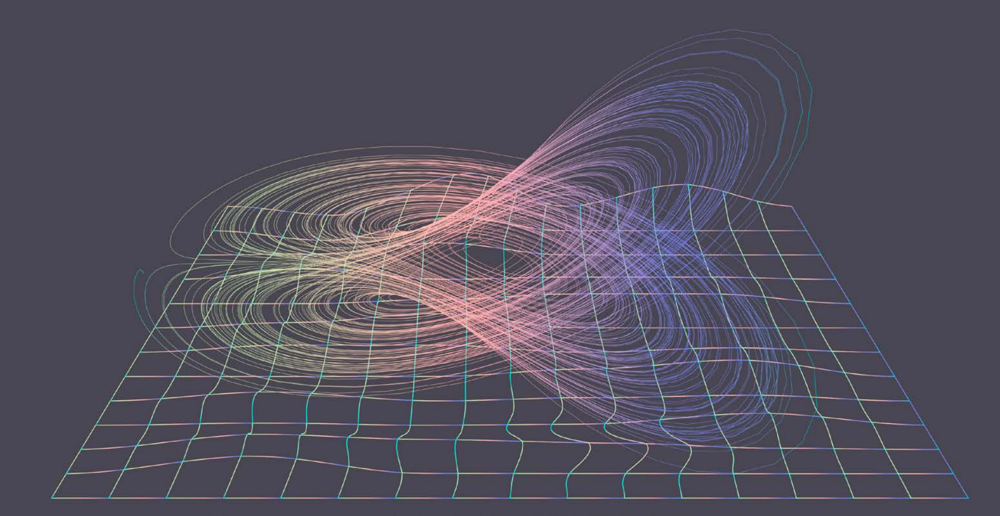

An interview-driven explainer on dynamical systems—why “period three implies chaos”, and how unpredictability becomes a scientific object.

This piece uses an interview structure to translate a mathematically precise topic into a readable public framework: what “chaos” means in dynamical systems, why it is definable, and why it matters beyond metaphor.
Excerpt 1 · Why “period three” became a turning point.
In his essay “Birds and Frogs”, Freeman Dyson divides mathematicians into two types: birds with a sweeping view from above, and frogs focused on a small patch of ground at their feet. He wrote that in chaos theory, what excites mathematicians is the theorem “period three implies chaos”— not its proof.
Excerpt 2 · A rigorous definition of chaos (and why definition matters).
Devaney’s definition says “chaos” requires three conditions: sensitivity to initial conditions, topological transitivity, and dense periodic points. Sensitivity captures unpredictability; transitivity describes how states can move across the space; dense periodic points mean periodic orbits are everywhere in the state space. Together, these conditions form “chaos” in a mathematical sense.
Excerpt 3 · Where “uncountably many” enters the story.
Since a period must be a natural number, all periodic points taken together are countable. Outside that countable set, there must exist uncountably many—infinitely many—initial points. For those initial points, long-term behavior becomes unpredictable, and chaos emerges.
Excerpt 4 · From a weather model to a theorem title.
Sanlian Lifeweek: How did Li Tianyan and Yorke arrive at this paper in the first place?
Ding Jiu: In 1961, the meteorologist Edward Lorenz began using a computer to build a toy weather-forecast model. He later found that even a minute difference in initial conditions could lead to completely different outcomes. Yorke was deeply interested in Lorenz’s work. He considered translating this continuous dynamical system into a discrete one, and conjectured that if the corresponding function has a point of period three, chaos will appear.
Sanlian Lifeweek: And that’s where “period three implies chaos” comes from?
Ding Jiu: Yes. Yorke then asked Li Tianyan to prove the conjecture—and Li produced a proof in just two weeks.